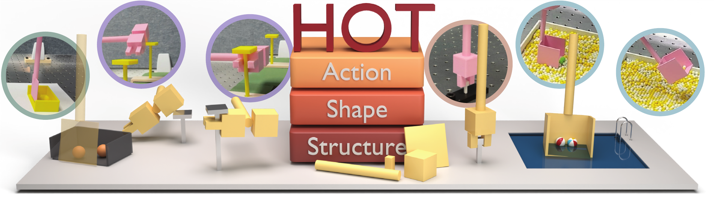
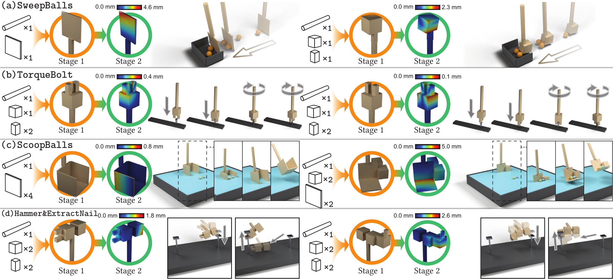

HOT discovers both conventional and unconventional tools for all four tasks, jointly designing their structure, shape, and action from scratch. Further shape–action refinement improves task performance while preserving success.

The ability to design a tool for a task marks a level of intelligence beyond merely understanding, selecting, or using one. Existing methods for robotic tool design typically optimize a tool's continuous shape and action within a structure that is prescribed or generated beforehand, so the structure itself stays outside the physical optimization loop. We study task-driven tool design from scratch, where tool structure, shape, and action are all derived from the desired physical outcome. Here we show that the three elements can be designed jointly by HOT, a hierarchical optimization whose upper level searches over discrete tool structures with BASS, while lower-level physical optimization evaluates their task behavior and returns milestone progress as behavioral evidence for the search, ultimately providing jointly optimized shape and action. On four tool-use tasks with distinct physical functions, HOT discovers functional structures after evaluating only a small fraction of search spaces containing up to 56 million structures, and the subsequent refinement of their geometry lowers the task loss on all tasks while preserving success, through deformations that are functionally interpretable. Once 3D printed, the tools accomplish all tasks on a real robot with the actions found in simulation. Designing tools from required physical effects, rather than a catalog of known tools, is a step toward the open-ended tool making seen in humans and animals.
Given a physical scene and a desired outcome, HOT jointly determines three coupled elements: structure (how primitive components are assembled), shape (their continuous geometry), and action (how the tool interacts with the scene).

HOT discovers both conventional and unconventional tools for all four tasks, jointly designing their structure, shape, and action from scratch. Further shape–action refinement improves task performance while preserving success.
The optimized tools are 3D printed and mounted on a 7-DOF RealMan RM75-B arm.
This work is supported in part by the Brain Science and Brain-like Intelligence Technology—National Science and Technology Major Project (2025ZD0219400), the Beijing Natural Science Foundation (QY26049), the National Natural Science Foundation of China (62376009), the Beijing Nova program, the NVIDIA Academic Grant Program using Spark and Thor, the State Key Lab of General AI at Peking University, the PKU-BingJi Joint Laboratory for Artificial Intelligence, the Wuhan Major Scientific and Technological Special Program (2025060902020304), the Hubei Embodied Intelligence Foundation Model Research and Development Program, and the National Comprehensive Experimental Base for Governance of Intelligent Society, Wuhan East Lake High-Tech Development Zone. We thank Ms. Hailu Yang (PKU), Ms. Qing Gao (PKU), and Lulin Huang (PKU) for their assistance.